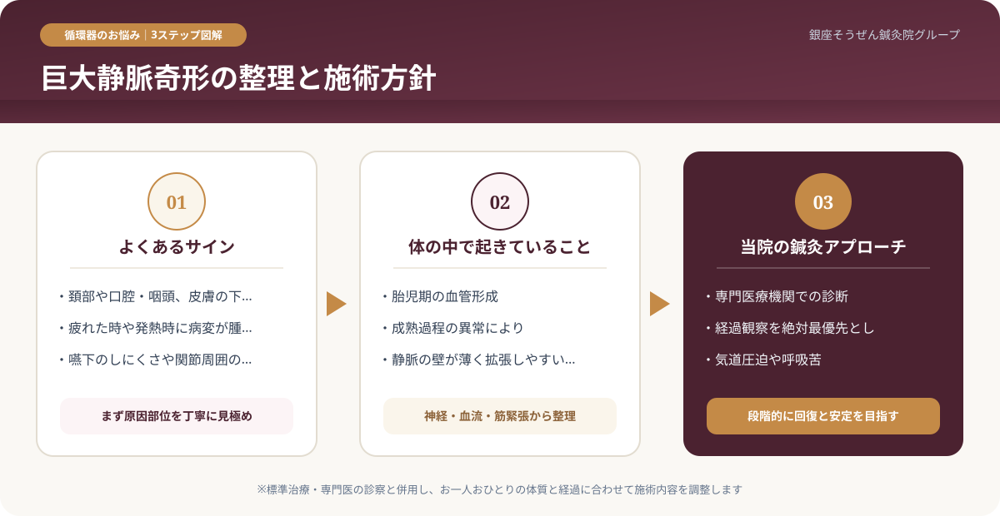

巨大静脈奇形の鍼灸
胎児期の静脈形成異常により頚部・口腔・咽頭等に巨大な腫瘤を生じる指定難病です。専門医管理を最優先し病変部への刺激は避けます。
まず知っておきたい要点と改善の流れ

胎児期の血管形成・成熟過程の異常により、静脈の壁が薄く拡張しやすい異常な血管塊が生まれつき存在する指定難病です。頚部・口腔・咽頭などに広く連続して生じることがあり、小児期から成人期にかけて徐々に症状が目立つケースも多くみられます。気道圧迫や嚥下障害、血液凝固異常、外傷による止まりにくい出血や感染のリスクがあるため、形成外科・血管外科等の専門医による硬化療法・手術・レーザー等の管理が不可欠です。
このようなお悩みはありませんか？
- ✓頚部や口腔・咽頭、皮膚の下に青紫色の腫れやふくらみがある
- ✓疲れた時や発熱時に病変が腫れて痛みや息苦しさが出る
- ✓嚥下のしにくさや関節周囲の動きの制限が気になる
- ✓出血や外傷に気をつけながら全身の疲労やストレスを整えたい
当院の施術アプローチ・改善の流れ
なぜ鍼灸で改善へ向かうのか？（作用機序の図解）
巨大静脈奇形に対する鍼灸は、心拍変動・血管トーンを整える自律神経サポート機序を通じて、お体本来の回復力を引き出します。

循環器専門医の標準治療を絶対前提とし、手首や背部の安全な経穴へ低刺激でアプローチします。
心臓への過剰な交感神経刺激を穏やかに鎮め、心拍リズムと血管緊張の急変を抑えます。
ストレスで固まりやすい胸郭や横隔膜の緊張を解き、酸素摂取とリラックス反応を促します。
内服管理を厳守しながら、疲労やストレスが引き金となる症状不安の軽減を支えます。
院長YouTube解説・関連動画
症状が現れはじめる時期が小児期であることも多い
巨大静脈奇形は生まれた時に発症することが多いです。しかし、乳児期では奇形血管の拡張度が少ないため、症状が現れはじめる時期が小児期であることも多いです。
症状は成長したり外的刺激などを受けたりすることで症状が進んで行きます。症状が進むと、疼痛や感染、血液凝固障害などが増悪します。高度の感染や出血、心不全などが起きてしまった場合は、命が危険に及ぶこともあります。
気道狭窄が起きるため呼吸困難が現れたり、食べることが難しくなったり、嚥下ができなくなったりします。顎骨の変形や吸収、破壊、骨格性咬合不全、閉塞性睡眠時無呼吸、構音機能障害などの症状が現れることも多いです。
場合によっては皮膚や粘膜にも病変が起きることがあります。皮膚や粘膜に病変が起きると、少し刺激を受けただけで血が出たり感染したりします。
巨大静脈奇形の症状
1. 視覚的な変化
巨大静脈奇形の最も明確な症状の一つは、皮膚の色が変わることです。皮膚の下に位置する静脈が拡張し、血液の流れが異常になることで、青紫色に変色したり、腫れたりします。これは、特に手足や顔などの露出部位において顕著に現れることがあります。
2. 疼痛
巨大静脈奇形が圧迫されると、疼痛を伴うことがよくあります。特に、関節や筋肉の近くにある場合、動きに伴って痛みが増強することがあります。
3. 皮膚の変化
静脈奇形が皮膚の近くに存在する場合、皮膚の表面に小さな突起やしこりが感じられることがあります。また、静脈奇形の拡大に伴い、皮膚が引っ張られ、皮膚の表面が凹凸になることもあります。
4. 内臓の影響
巨大静脈奇形が内臓に存在する場合、その臓器の機能に影響を及ぼすことがあります。例えば、肝臓や腎臓に巨大静脈奇形が存在する場合、それらの臓器の機能が低下したり、他の病気との併発リスクが上昇する可能性があります。
5. 出血や潰瘍
静脈奇形は、皮膚表面に近い場所に存在する場合、外傷や摩擦により破れるリスクが高まります。その結果、出血や潰瘍が発生することがあります。
6. 動作の制限
静脈奇形が関節や筋肉の近くに位置する場合、その部位の動きが制限されることがあります。特に、手や足に巨大静脈奇形が存在する場合、握る力が弱まったり、歩行に困難を伴うことが考えられます。
7. 脈打つ感覚
巨大静脈奇形が血流の影響を受けて拡張・収縮を繰り返すことで、本人が脈打つ感覚や響く音を感じることがある。
巨大静脈奇形の主な改善方法は、アスピリンなどの投与です。これは、血栓や静脈石を予防するために行います。他にも、手術やレーザーを行ったりすることもあります。
手術では頚部や口腔、咽頭の重要な機能がなくなってしまう可能性があるため、完全に切り取ることはできません。
レーザーを使って行う改善は、咽頭や口腔の粘膜の近くに起きている病変に対して効果を発揮しますが、病変が深いところにある場合はあまり効果が見られないと言われています。
巨大静脈奇形の改善法
1. 監視
全ての巨大静脈奇形が即時の改善を必要とするわけではありません。症状が軽微であり、奇形の進行が遅い場合、医師は状態を定期的に監視することを推奨することがあります。この方法は、特に小さな静脈奇形や機能的な問題を引き起こしていない場合に選択されることが多いです。
2. スクレロセラピー
スクレロセラピーは、直接静脈奇形に薬剤を注射し、その薬剤によって静脈の壁を硬化、閉塞させる改善法です。これにより、異常な血流を停止させることができます。複数回の改善が必要となることが多く、改善後には一時的な腫れや痛みが現れることがある。
3. 外科手術
大きな静脈奇形や、重要な臓器や神経に近接している場合には、外科的な切除が考慮されることがあります。手術はリスクを伴うため、他の方法と比較して慎重に検討される必要があります。手術後の回復期間中には、腫れや痛み、感染リスクなどの問題が発生する可能性があります。
4. 放射線
一部の巨大静脈奇形は、放射線によって縮小することができる場合があります。ただし、放射線には副作用が伴うため、他の方法との比較や、改善を受ける部位によっては注意が必要です。
5. レーザー
レーザーを用いて静脈奇形を治療する方法も存在します。特に皮膚の表面近くに位置する小さな静脈奇形の改善に効果的で、ダウンタイムが短いというメリットがあります。
6. 圧迫
特定の位置に存在する静脈奇形、特に四肢に発生したものに対して、圧迫バンドやストッキングを使用して圧迫を行うことがあります。これにより、静脈奇形の成長を抑えることが期待されます。
開放的外科的手術・・・主に頭部や脳内のAVMに対して行われる方法です。頭蓋を開くことによって直接奇形部分にアクセスし、異常な血管を除去します。
内視鏡的手術・・・小さな切開を通して内視鏡を挿入し、AVMを除去する方法です。身体の他の部位、特に消化管などに存在するAVMの改善に適しています。
エンブリゼーション・・・カテーテルを使用して異常な血管にアクセスし、血流を遮断するための物質（エンブリゼーション材）を注入する方法です。これにより、AVMの血流を遮断し、そのサイズを縮小させることができます。
「手術の目的」
１症状の緩和
AVMによって生じる症状（痛み、腫れ、機能障害など）を緩和するためです。
２合併症の予防
AVMは破裂のリスクがあり、特に脳のAVMの場合、脳出血の原因となる可能性があります。手術は、このような重大な合併症を予防する目的で行われることが多いです。
３コスメティックな理由
顔や露出部位に存在するAVMは、外見上の問題を生じさせることがあります。このような場合、外見を改善するための改善として手術が行われることもあります。
「効果」
１症状の改善
多くの場合、手術によってAVMに関連する症状は大幅に改善されます。
２リスクの軽減
特に脳のAVMの場合、手術は潜在的な脳出血のリスクを大幅に軽減することが期待されます。
３生活の質の向上
症状の改善やリスクの軽減により、生活の質が向上することが期待されます。
手術は、そのリスクと効果をしっかりと評価した上で、専門家との十分なコンサルテーションを経て進めることが重要です。
巨大静脈奇形では、疲れた時や熱が出た時に病変が腫れ、呼吸が苦しくなったり痛みが起きたりすることがあります。
さらに、外傷でも悪くなることがあり、傷や潰瘍ができた場合は感染の原因にもなります。出血傾向がある場合、外傷を受けた時、なかなか血が止まらないこともあります。
疲れをためないようにして怪我をしないように気をつけることが大事です。
循環器・動悸・高血圧・心不全補助の全身ツボ図解
実際の施術ではお一人おひとりの体質・症状に合わせて選穴しますが、動悸・不整脈・本態性高血圧・慢性心不全の循環器治療併用サポートの臨床でよく用いられる代表的なツボの目安です。

📌 代表的なツボの詳細一覧表を開く（6穴） ▼
| ツボ名 | 位置の目安 | 主な狙い | セルフケアの注意点 |
|---|---|---|---|
| 内関（ないかん） | 手首の横ジワから指3本分肘寄りの中央 | 動悸・不整脈・狭心症補助で最も研究されている心包経の要穴 | 胸痛・冷や汗・失神がある場合は直ちに救急受診してください。 |
| 膻中（だんちゅう） | 胸の中央（胸骨上） | 胸のつかえ・交感神経の高ぶり・不安感の鎮静 | 強く押さず手のひらで温めながら深呼吸します。 |
| 神門（しんもん） | 手首の横ジワの小指側のくぼみ | 心拍の落ち着き・緊張性の動悸と不眠ケア | ペースメーカー使用時は電気鍼を避け手技のみで行います。 |
| 曲池（きょくち） | 肘を曲げた外側のシワの先端 | 血圧変動に伴う上肢・頭部の緊張緩和 | 降圧薬・心不全薬の自己判断での中止は厳禁です。 |
| 足三里（あしさんり） | 膝の下外側、指4本分下 | 末梢循環・自律神経バランスとQOL維持 | 身体負担の少ない穏やかな低刺激で行います。 |
| 太衝（たいしょう） | 足の甲、親指と人差し指の骨の間 | ストレス性の血圧上昇・末梢血管収縮の緩和 | 就寝前の優しい指圧でリラックスを促します。 |
国際査読論文の科学的エビデンス
国際的な医学データベース（PubMed・Cochrane等）で報告されている動悸・不整脈・本態性高血圧・慢性心不全の循環器治療併用サポート領域の代表的な査読済み鍼灸研究をまとめています（標準治療との併用や研究上の限界を含めて正確に掲載）。
📚 査読論文データ・PubMed出典リンクを開く（4件） ▼
| 年・研究デザイン | 対象・規模 | 主な結果 | 限界・出典 |
|---|---|---|---|
| 2019年 大規模多施設RCT | 慢性安定狭心症 398名解析（標準薬物療法併用） | 16週時点の4週間発作減少は実鍼群がシャム群比5.18回・待機群比5.63回多く有意改善（P<0.001）。 | 標準薬物療法への併用（補完）試験であり単独療法ではない。 JAMA Intern Med (PMID: 31355870) |
| 2007年 シャム対照RCT | 本態性高血圧 140名完了（ドイツ・24時間ABPM） | 治療終了時の24時間血圧はシャム比SBP -6.4mmHg・DBP -3.7mmHg有意低下（P<0.001）。 | 終了3〜6か月で治療前水準へ戻るため継続ケアが必要。 Circulation (PMID: 17548730) |
| 2015年 メタ解析 | 高血圧 23 RCTs（n=1,788） | 降圧薬＋実鍼は降圧薬＋シャム比でSBP -7.47mmHg・DBP -4.22mmHg有意低下。鍼単独は降圧薬と同等・根拠不十分。 | 盲検化・異質性に課題。降圧薬の自己中断は厳禁。 PLoS One (PMID: 26207806) |
| 2025年 メタ解析 | 心拍変動（HRV）10 RCTs（n=744） | 自律神経全体の適応指標SDNNを有意に改善、重篤な有害事象なし。 | LF・HFには不確実性が高くさらなる検証が必要。 Front Neurosci (PMID: 41230507) |
参考文献・出典
- 2019年 大規模多施設RCT（慢性安定狭心症 398名解析（標準薬物療法併用））— JAMA Intern Med (PMID: 31355870)
- 2007年 シャム対照RCT（本態性高血圧 140名完了（ドイツ・24時間ABPM））— Circulation (PMID: 17548730)
- 2015年 メタ解析（高血圧 23 RCTs（n=1,788））— PLoS One (PMID: 26207806)
- 2025年 メタ解析（心拍変動（HRV）10 RCTs（n=744））— Front Neurosci (PMID: 41230507)
よくある質問（FAQ）
Q. 腫れている部分や痛みのある病変部に直接鍼を打つことはできますか？▼
Q. 疲れがたまると腫れやすいのですが、体調管理の相談はできますか？▼
あわせて読まれる関連疾患（循環器のお悩み）
先天的な混合型脈管奇形により四肢の左右差や赤アザ・腫脹が生じる指定難病です。専門医管理を最優先とし、安定期の二次的な負担を穏やかにケアします。
動脈と静脈が毛細血管を介さず広範囲に直接つながる指定難病です。専門医での治療を最優先とし、病変部への直接刺激は厳禁です。
先天的な酵素異常で有害なイソ吉草酸が蓄積する希少な代謝異常症です。専門医での食事管理・早期点滴を最優先とし、安定期の体調を穏やかに支えます。
好酸球の異常増加により全身の細い血管に炎症が生じる指定難病です。専門医の長期治療を最優先とし、寛解・安定期のしびれや緊張を穏やかにケアします。
原因不明の慢性炎症と複数リンパ節の腫脹を特徴とする指定難病です。専門医の薬物治療と感染予防を最優先に、安定期の体調ケアを補完します。
腎臓や肺・神経などの小型血管に炎症が起こる指定難病です。ステロイド・免疫抑制治療を最優先とし、寛解・安定期の体調管理を補完的に支えます。
CLINICAL RECOVERY CASES
✨ 実際の臨床改善事例・回復経過を見る
銀座本院をはじめ各院での実際の改善事例を症状別に絞り込んでご確認いただけます。
おひとりで悩まず、まずはご相談ください
銀座本院・川口・大宮・横浜・博多・田無の各院でご予約を承っております。